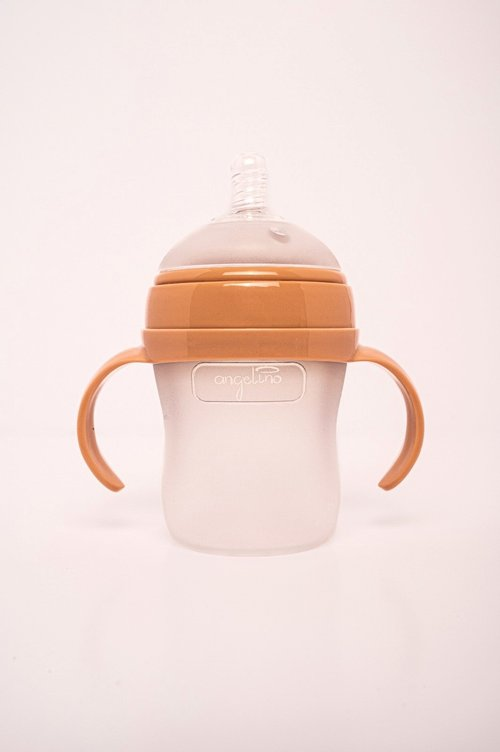
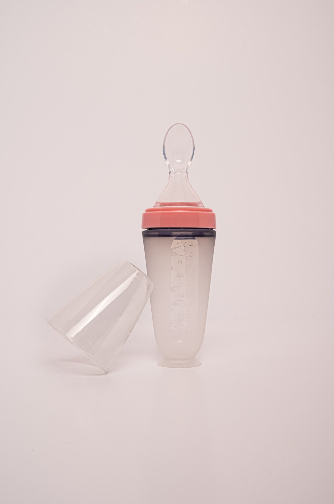
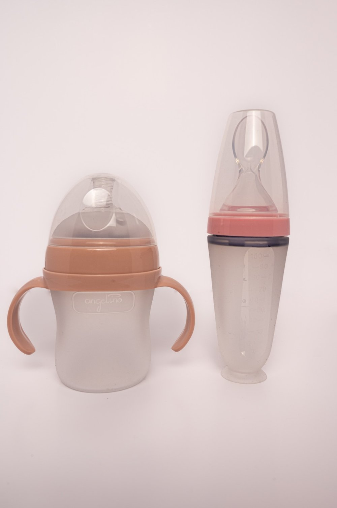
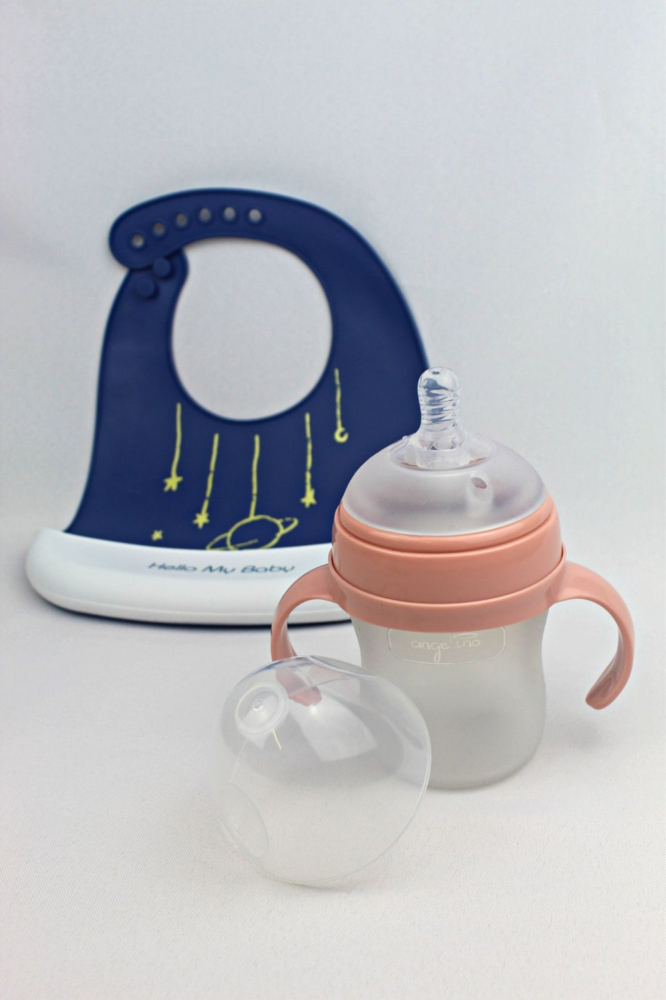

Everything parents asked for when it comes to baby products
Our range of Silicone Feeding Bottles
Angelino Silicone Feeding Bottle for Newborn or 3 + Months Slow Flow / Fast Flow Teat.
Silicone Squeeze Bottle With Suction Cup For Baby of Angelino Ideal for Fruits/Vegetables Puree.
Starter Pack! Silicone Baby Feeding Bottle with Grip Handles and The 6 Months + Silicone Squeeze Bottle with Suction Cup.
Silicone Squeeze Bottle For Baby of Angelino Ideal for Fruits/Vegetables Puree + Adjustable Silicone Waterproof Weaning Baby Bib with Pocket.
When creating the Chubby Cheeks Feeding Bottle, the highest quality silicone has been selected for a soft matte touch when grabbing and holding the bottle and a slippery breast-like teat for your baby's delicate gums.
Lightweight and easy to travel with, the Chubby Cheeks Feeding Bottle will be of help for as long as necessary and more. We include and offer handles that can be added to the bottle when your baby is ready to hold it on their own.
We are here to support your baby grow big under Angelino's wing.
Grow big under Angelino's wing
Sign up to our newsletter!
Receive exclusive offers and discounts. We promise, we will not be loud!